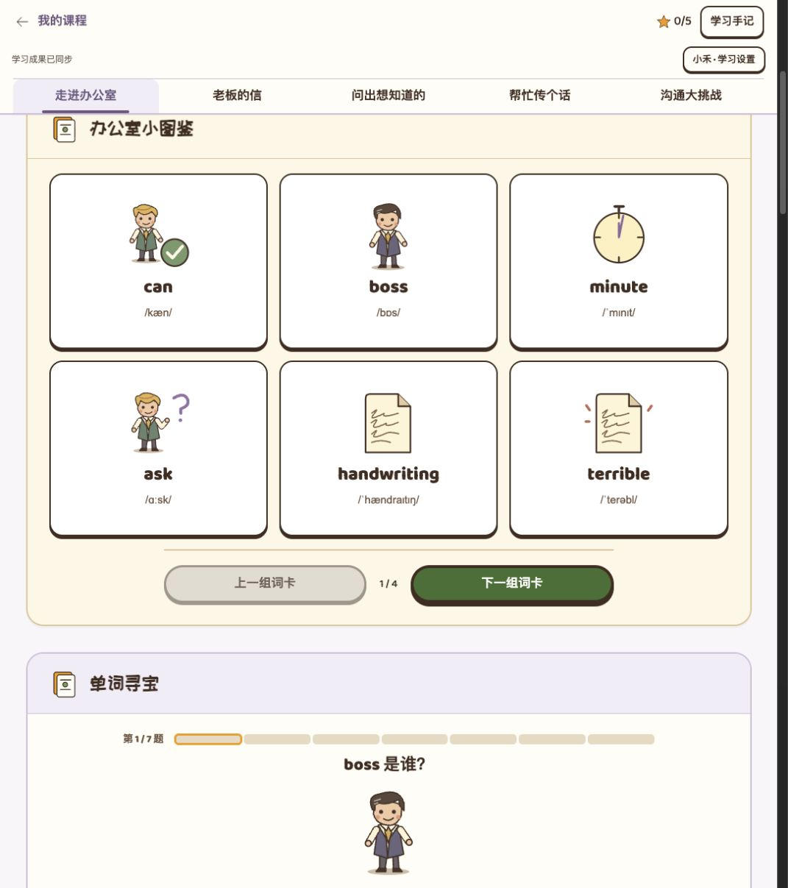
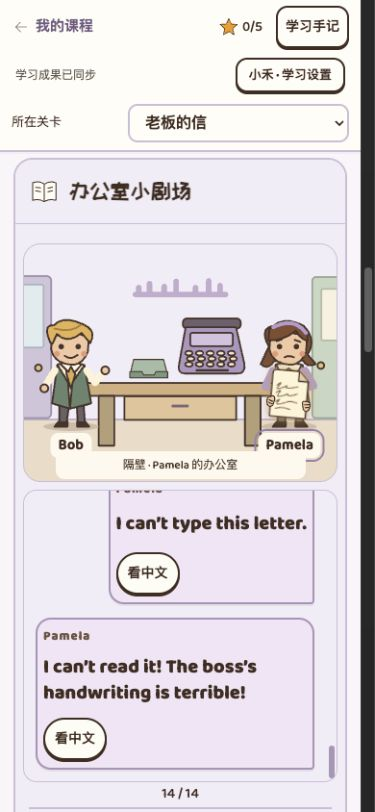
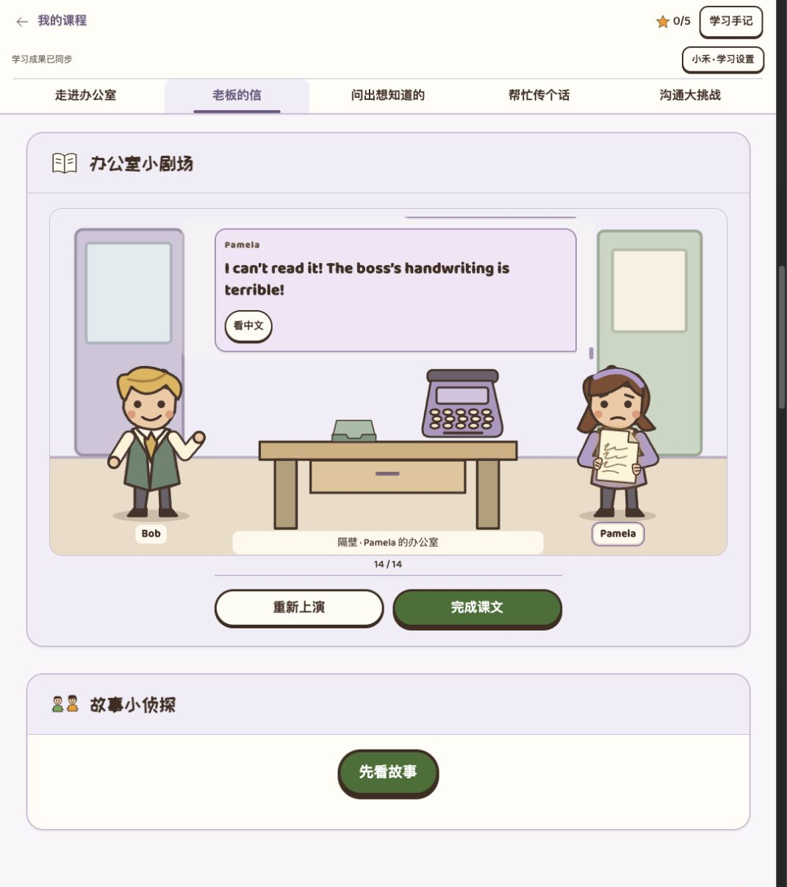
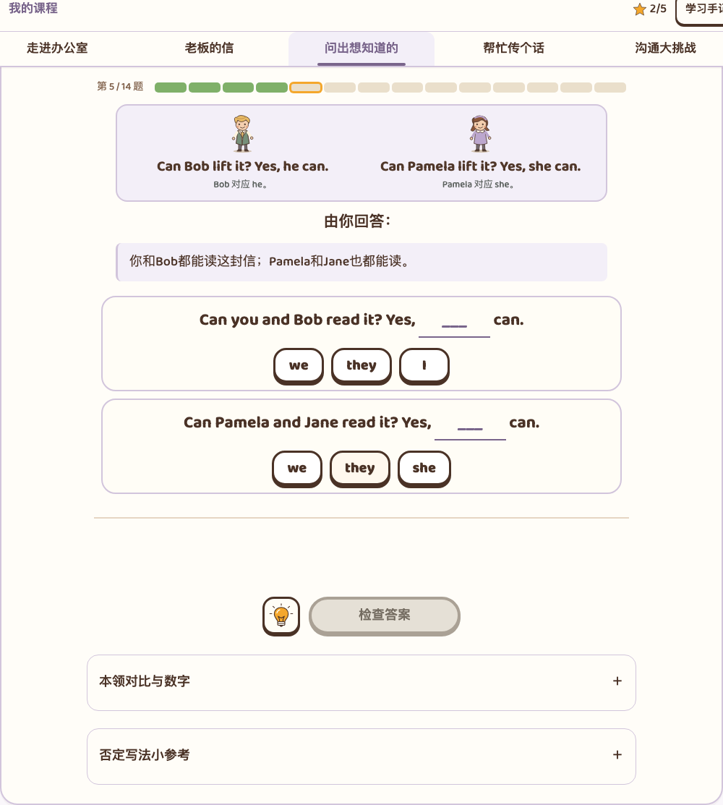
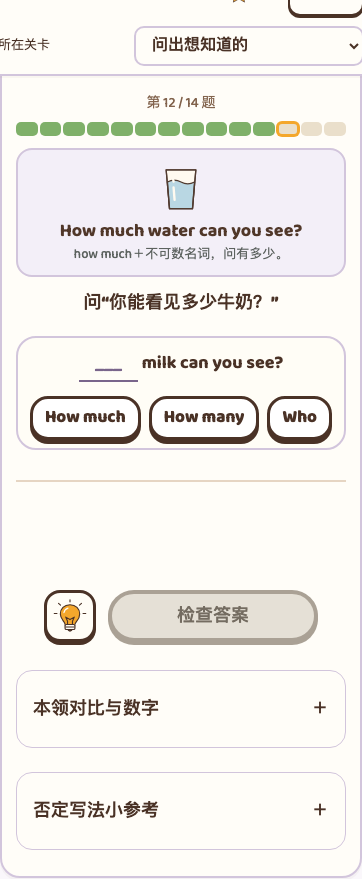
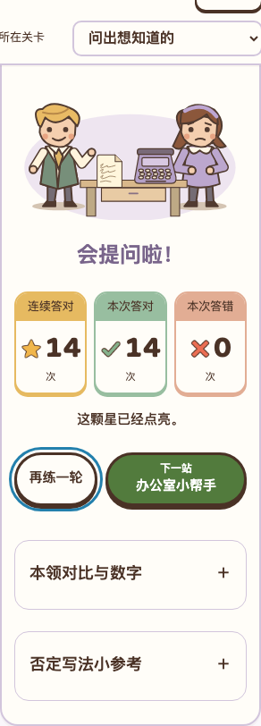
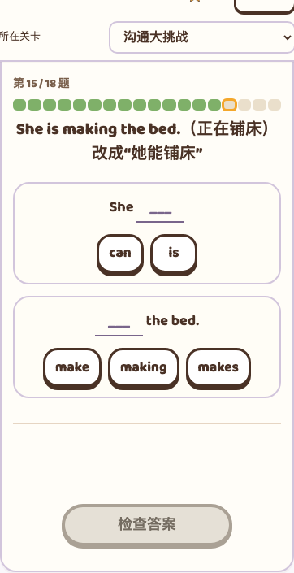
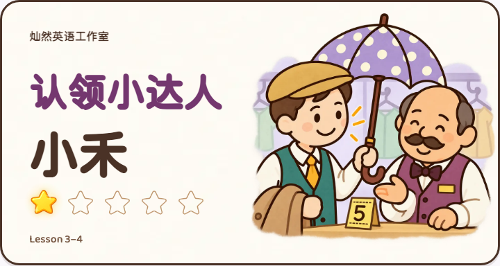
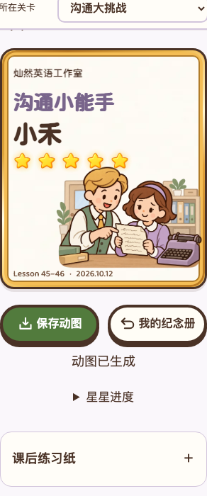

五个答题区，49题，最多五颗星。无英语配音，语法以同步导学 Grammar 为依据。
下面是本地真实页面与隔离账号产出的画面；不是上线验收或用户视觉认可。元素长截图可能带有浏览器固定导航的截取位置，布局判断同时以实际视口检查为准。









本地页面12项、完整账号根目录6项／测试子路径6项、WebKit关键流程2项、邻课43–44针对检查2项通过。原生手机微信、教师带课和儿童体验待验。提交、推送、部署均未执行。